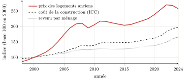

Première partie — Théorie de la rente et de l'espace · Chapitre 4
4 De la terre à l’espace bâti : la localisation, produit collectif et péage privé
L’espace (social) est un produit (social).
Henri Lefebvre, La Production de l’espace (Lefebvre 1974).
Les trois chapitres précédents ont conduit la rente jusqu’à sa forme capitaliste accomplie — mais sur le sol agricole, celui de Ricardo et de Marx, des fermiers et des champs. Or l’objet de ce livre n’est pas le blé : c’est le logement, le bureau, l’entrepôt — l’espace bâti, là où l’usager vit et travaille. Il faut donc faire le pas : transférer les lois de la rente de la terre cultivée à l’espace construit. Ce pas n’a rien d’un coup de force ; Marx l’a amorcé, et l’école qui l’a suivi — Lefebvre, Lipietz, Harvey — l’a accompli. Il révèle au passage ce qui commande sans doute toute la première partie : ce que la fertilité était à la terre, la situation l’est au sol urbain. Mais la situation, à la différence de la fertilité, n’est pas une qualité naturelle du sol : c’est un produit collectif. Le conditionnement que le chapitre 1 tenait pour un donné devient ici une fabrication sociale — et c’est elle que le propriétaire encaisse sans l’avoir faite. Telle est la thèse du chapitre : la rente urbaine est le péage prélevé sur une valeur que tous produisent et qu’un seul capte.
4.1 Le transfert des lois de la rente : de la fertilité à la situation
Le premier pas de la transposition n’est pas le nôtre : il est de Marx. Au chapitre xlvi du Livre III (« La rente des terrains à bâtir. La rente des mines. Le prix de la terre »), il étend l’analyse de la rente au sol urbain, et il y opère le déplacement décisif : ce qui, pour la terre agricole, tenait à la fertilité tient désormais à l’emplacement. Les rentes des terrains à bâtir « sont caractérisées, en premier lieu, par l’influence prépondérante qu’y joue la situation ».1 La loi de la rente différentielle se transpose alors terme à terme : là où des capitaux égaux appliqués à des terres inégalement fertiles donnaient des produits inégaux, des capitaux égaux investis sur des parcelles inégalement situées donnent des recettes inégales ; l’écart se mue en surprofit, et le surprofit en rente au bénéfice du propriétaire du sol. La barrière de la propriété se transpose de même : l’emplacement le plus mal placé n’est pas franc de rente, car il faut bien être quelque part, et nul terrain n’est cédé gratuitement tant que dure la propriété privée du sol (chapitre 3).
Ce transfert, l’économie marxiste de langue française l’a systématisé, et le crédit lui en revient. C’est Alain Lipietz qui, le premier, l’a porté à son concept, dans un livre dont le titre dit déjà toute notre thèse : Le tribut foncier urbain (1974).2 Il y remplace la fertilité et la distance par une « prédisposition » des sols qu’il nomme la division économique et sociale de l’espace : un quartier, par sa desserte, son voisinage, ses équipements, se prête à tel usage et le valorise — et c’est cette prédisposition, non quelque vertu du sol, qui commande la rente.3 Surtout, il dégage la nature du droit qui permet le prélèvement. Ce n’est pas une capacité productive ; c’est « une propriété purement politique : une carte des “droits sur” », le droit de prélever un tribut sur quiconque entend utiliser la parcelle.4 La même école a creusé le sillon : elle a montré comment le promoteur, agent intermédiaire entre marché foncier, marché financier et chantier, transforme le surprofit de localisation en rente, et pourquoi le logement demeure une « marchandise impossible » ; elle a rapporté la forme de l’espace urbain à l’alliance de l’État et du grand capital.5 Reste à établir le point que cette école pose mais que ce livre veut mettre au centre : que la situation, qui fait la rente, est une œuvre commune.
4.2 La localisation est un produit collectif
Pourquoi une parcelle vaut-elle plus qu’une autre ? Non parce que son propriétaire l’a améliorée — s’il l’a fait, drainage ou bâtiment, c’est là du capital incorporé, une production réelle, dont l’intérêt n’est pas de la rente (chapitre 3). Une parcelle vaut plus parce qu’elle est mieux située : proche du centre, des transports, des emplois, des écoles, des commerces, des autres. Or rien de tout cela n’est l’ouvrage du propriétaire. La valeur d’emplacement est produite par la présence et l’activité de tous — les voisins, les passants, les services publics, les générations qui ont bâti la ville. C’est ce que Lefebvre a établi sous une formule devenue classique : l’espace n’est pas un contenant neutre où les choses se rangeraient, mais un produit social, sécrété par l’activité d’ensemble d’une société.6
Le cœur de cette production, c’est la centralité. La ville, écrit Lefebvre, est une « œuvre » plus qu’un produit : l’effet de rassemblement et de simultanéité par lequel se concentrent, en un lieu, les hommes, les activités, les richesses et les échanges.7 Cette centralité est une externalité au sens strict : personne ne la produit à elle seule, et chacun y contribue par sa seule présence. Un emplacement est désirable parce que tous les autres sont là ; sa valeur est l’ombre portée, sur une parcelle, de l’œuvre collective qu’est la ville. Ce point déplace la thèse du chapitre 1. Là, le sol conditionnait l’accès, et son conditionnement passait pour un donné naturel, antérieur à tout travail. Ici, le conditionnement lui-même — la situation — est fabriqué, et fabriqué par la collectivité entière. Le propriétaire du sol urbain ne se contente pas de ne rien produire : il encaisse, comme s’il en était l’auteur, la valeur d’une chose que tous ont faite. C’est pourquoi Lefebvre note que, dans ce mouvement, « le sol urbain entre dans la valeur d’échange » : l’œuvre commune est convertie en titre privé.8
4.3 … captée privativement
Cette valeur produite par tous, le propriétaire la capte intégralement, et il la capte comme un transfert, non comme une production. C’est la démonstration de David Harvey. Dès son étude de Baltimore, il forge la catégorie de rente de monopole de classe : le revenu qu’une classe de détenteurs — bailleurs, financiers — tire d’une ressource vitale et rare en imposant à la classe des usagers un « rendement minimum » garanti, par le seul jeu de son pouvoir et d’une rareté structurée.9 Trente ans plus tard, il en donne la formule générale : « toute rente repose sur le pouvoir de monopole de propriétaires privés sur certaines portions du globe ».10 Et il pose, mieux que personne, la question qui est au cœur de ce livre. Ce qui fait la valeur d’un lieu, montre-t-il, c’est un « capital symbolique collectif », des marques de distinction « auxquelles chacun a contribué, aujourd’hui comme par le passé » ; pourquoi, dès lors, « laisser la rente de monopole attachée à ce capital symbolique être captée par les seules multinationales ou par un mince segment de la bourgeoisie locale » ?11 La question est exactement celle de la formule trinitaire retournée : un tiers (le propriétaire du sol) s’interpose entre l’œuvre collective et ses auteurs pour en prélever le péage.
L’enquête des années 1970 l’avait établi sur le terrain le plus concret. À coût de construction presque égal, le même mètre carré bâti se vend bien plus cher dans un beau quartier que dans une banlieue ouvrière ; c’est ce surprofit de localisation, et lui seul, que le propriétaire du sol capte sous la forme du prix du terrain.12 Le péage urbain a ainsi sa figure achevée : le propriétaire tient la porte d’un emplacement que tous ont rendu désirable, et fait payer le passage — la valeur d’usage de la ville, œuvre commune, est confisquée comme valeur d’échange d’un titre privé.13
4.4 La preuve par les prix : c’est la localisation, non le bâti
Cette thèse se vérifie sur les prix, et la vérification est d’autant plus probante qu’elle vient d’une source non suspecte de marxisme. Pour la fournir, il faut d’abord faire le partage que la discipline du chapitre 3 impose : dans le prix d’un logement, séparer ce qui paie une production réelle — le bâti, ouvrage de maçons, amortissable, légitime — de ce qui paie la seule détention du sol. Or le second l’emporte massivement sur le premier, et de façon croissante. Le statisticien public l’établit par ce qu’il nomme le « compte à rebours » : le promoteur fixe le prix qu’il peut payer pour un terrain en partant du prix des logements du voisinage et en retranchant ses coûts. Si bien que, conclut le statisticien, « c’est le prix des logements du voisinage qui […] détermine le prix des terrains, et non l’inverse ».14 Le prix du sol n’est pas un coût qui entrerait dans le prix du logement : c’est le résidu que le prix du logement laisse au propriétaire, une fois la production payée.
Les ordres de grandeur confirment le partage. De 2000 à 2020, l’indice du coût de la construction a progressé d’environ 60 %, tandis que le prix des logements anciens était multiplié par 2,3 à 2,7 : l’écart, c’est-à-dire l’essentiel de la hausse, est imputable au sol, non aux briques (figure).15 On peut le dire autrement, et plus crûment, en comparant le prix de marché au coût économique réel d’un logement — le bâti amorti, l’entretien, le foncier compté pour rien : à Paris, se loger coûte environ cinq fois ce coût, et l’acheter plus du double ; la part qui excède n’est rien d’autre que le tribut de situation.16 La forme pure de cette rente de situation se lit là où la centralité est extrême : un commerce des Champs-Élysées paie un loyer qui peut atteindre plusieurs centaines de fois le coût économique de son local — non parce qu’on y bâtit autrement, mais parce que la valeur d’adresse, produite par la ville entière, y est captée à l’état pur.17

Bilan
Au terme de cette transposition, le livre a rejoint son objet : sur le sol urbain, ce que la fertilité était à la terre, la situation l’est à l’espace bâti ; mais la situation est un système d’accessibilités et d’externalités produit collectivement (l’œuvre de la ville entière) et capté privativement par le propriétaire du sol, qui n’en est pour rien l’auteur. La rente urbaine est donc, comme la rente agricole, un tribut et non une production : le péage prélevé sur une valeur commune. Elle en est même la forme la plus nette, car ici nul ne peut feindre que le sol « produirait » : ce qui fait la valeur d’un emplacement, c’est visiblement la présence des autres.
De ce constat, deux fils partent, que les parties suivantes reprendront. L’un mène à la mesure. Capitalisée au taux d’intérêt, la rente de situation devient un prix, et le titre sur le sol « devient une forme de capital fictif » : un actif évalué par le flux de tribut qu’il promet, vers lequel le capital excédentaire se déverse comme dans un « second circuit ».18 C’est le germe de la financiarisation du logement : la partie III en prendra la mesure, en euros, et veillera à ne jamais compter ce tribut comme une production. L’autre fil mène au sujet. Si la valeur de la ville est produite par tous et captée par un seul, alors la ligne de partage est tracée : d’un côté l’usager, qui paie pour habiter et travailler le lieu qu’il contribue à faire vivre ; de l’autre le rentier, qui encaisse. Lefebvre en a tiré le mot d’ordre qui commande toute la partie IV — le « droit à la ville », « un cri et une revendication » : le droit, pour ceux qui font la ville, de se la réapproprier.19 Mais c’est au chapitre suivant qu’il faut d’abord fonder ce sujet en rigueur — établir qui est l’usager, qui est le rentier, et pourquoi ils forment les deux pôles d’un même rapport : là se trouve le verrou conceptuel du livre.
(Marx 1894), chap. xlvi. La rente différentielle de situation, simple second déterminant chez le Marx agricole (chap. xxxix, et chapitre 3 ici), devient en ville le déterminant prépondérant. On ne réexpose pas ici les deux autres motifs du même chapitre xlvi — la rente de la « misère », « source plus riche que les mines du Potosi », et le « tribut [payé] afin de pouvoir habiter la terre » — : leur foyer, parce qu’ils fondent le sujet de classe, est au chapitre 5.↩︎
(Lipietz 1974). Lipietz s’y donne explicitement pour tâche « de transposer aux sols urbains la théorie de la rente, que Marx avait développée uniquement pour les terrains agricoles » (Lipietz 2013). Le présent livre ne réinvente donc pas ce geste : il le reçoit de Lipietz, et lui doit jusqu’au mot de tribut. Son apport propre est ailleurs : dans la longue durée qui précède le capitalisme (chapitres 1 et 2), dans le sujet de classe que la rente oppose (chapitre 5), et dans la mesure de son montant (partie III).↩︎
(Lipietz 2013), résumant la « théorie standard » de 1974. La division économique et sociale de l’espace est l’équivalent urbain de la fertilité : une carte de valeurs d’emplacement, produite par l’histoire et l’activité collectives.↩︎
(Lipietz 2013). Lipietz emprunte sciemment le mot tribut au « mode de production tributaire » de Samir Amin, « puisque c’est bien ainsi que procédait le seigneur féodal ou le gouverneur d’une province » — la même filiation que celle des chapitres 2 et 3. Le tribut foncier urbain n’est pas le prix d’un service : c’est le droit politique d’en exiger un.↩︎
Sur le promoteur et la production capitaliste du logement, (Topalov 1974) ; sur la théorie du profit, de la rente et de la ville, (Topalov 1984) ; la « marchandise impossible » est mobilisée au chapitre 5 ((Topalov 1987)). Sur l’État et la question urbaine, (Lojkine 1977).↩︎
(Lefebvre 1974). « L’espace (social) est un produit (social) » : l’espace n’est ni un vide pré-donné ni une forme imposée du dehors, mais le résultat continûment produit de la pratique sociale.↩︎
(Lefebvre 1968). La ville comme « œuvre » (proche de l’œuvre d’art) opposée au simple « produit » ; la forme urbaine définie comme « la rencontre, le rassemblement de ce qui existe alentour ». L’« œuvre » relève de la valeur d’usage, le « produit » de la valeur d’échange : la marchandisation de la ville subordonne la première à la seconde.↩︎
(Lefebvre 1968) : la spéculation foncière fait entrer « le sol urbain dans la valeur d’échange ». C’est l’exact analogue urbain de l’accumulation primitive du chapitre 2 : une mise en propriété de ce qui était commun.↩︎
(Harvey 1974). Harvey y traite explicitement la rente comme « un paiement de transfert […] plutôt qu’un accroissement de valeur par la production » : la confirmation, par un autre chemin, de la thèse des chapitres 1 et 3 (la rente n’est pas une production). À Baltimore, la rareté qui rend le tribut exigible est elle-même fabriquée par les institutions financières, qui structurent des sous-marchés et tiennent le haut de la hiérarchie.↩︎
(Harvey 2002) (The Art of Rent) ; nous traduisons. La rente de monopole naît du contrôle exclusif d’un bien « unique et non reproductible » ; sa version proprement urbaine est la centralité, pour laquelle commerçants et hôteliers paient une prime d’accessibilité.↩︎
(Harvey 2002), nous traduisons. La question est distributive et politique : à qui revient la rente d’une valeur que tous ont produite ? C’est, transposée à l’espace, la question même de l’usager et du rentier (chapitre 5).↩︎
(Lipietz 2013) : à l’époque de l’enquête, « les différences de prix de construction au m² n’excédaient pas 10 % entre les quartiers ouvriers et les quartiers de classes moyennes, mais […] les prix de vente étaient déjà bien plus élevés dans les seconds […] ce surprofit étant capté sous forme de prix du sol par les propriétaires fonciers initiaux ». La construction est une production réelle ; la différence de prix, à construction égale, est pur tribut de localisation.↩︎
Un haut fonctionnaire de l’urbanisme le notait déjà en 1976 : (Querrien 1976). Pour Max Querrien — conseiller d’État, ancien directeur de l’architecture —, « le sol […] prend la valeur d’échange que lui donnent le droit de construire et la rente de situation, qui sont, l’un et l’autre, des produits immatériels de l’activité sociale : plans d’urbanisme, équipements publics financés par les contribuables, engouement et marketing » ; en sorte que « le profit foncier est une plus-value acquise sans travail » et que « les propriétaires fonciers encaissent la plus-value » produite par la collectivité.↩︎
(Friggit 2024), §4.2. C’est, mot pour mot, la rente price-determined de Ricardo et de Marx (chapitres 1 et 3), énoncée par le service statistique de l’État : le prix du sol est un résidu, non un coût. « Lorsqu’un opérateur se plaint du prix élevé du foncier, il déplore le prix des logements du voisinage. »↩︎
Indice INSEE du coût de la construction, 2000–2020 ; prix des logements anciens, (Friggit 2024). Le foncier représente aujourd’hui jusqu’à 40 % du prix d’un logement neuf en Île-de-France (Notaires du Grand Paris 2021). Une réserve, que Friggit lui-même soulève : l’envolée post-2000 tient surtout au crédit bon marché (taux bas, allongement des prêts). Loin d’infirmer la thèse, cela en donne le mécanisme : l’argent facile gonfle la solvabilité des ménages, et c’est le prix du sol — résidu — qui l’absorbe. La rente de localisation est précisément ce qui se capitalise quand l’argent est abondant.↩︎
Calculs détaillés et sources en partie III (loyers : OLAP, Bien’ici ; prix : notaires, SeLoger ; coûts de construction : USH). On ne donne ici ces ratios qu’à titre d’illustration de la transposition : leur mesure systématique — et le montant agrégé du tribut — est l’objet de la partie III, qui en fait l’inventaire.↩︎
Loyers prime du commerce parisien : sources VALORIS/CBRE, détaillées en partie III. L’adresse ne produit rien ; elle concentre la valeur que la métropole entière a fabriquée. C’est la rente de monopole de Harvey portée à son comble : l’unicité non reproductible d’un emplacement.↩︎
(Harvey 1982), chap. 8 et 11 : la rente capitalisée fait du titre foncier un « capital fictif » ; le bâti forme un « second circuit » d’absorption du capital. (Lefebvre 1970) nommait déjà l’immobilier un « second secteur » où le capital afflue quand l’industrie ralentit. Sur la terre devenue actif financier d’un « État propriétaire », (Haila 2016).↩︎
(Lefebvre 1968) : le droit à la ville comme « cri et revendication », « droit à la vie urbaine transformée et renouvelée ». Ce n’est pas une nostalgie de la vieille ville ; c’est la revendication que l’œuvre commune revienne à ses auteurs. L’argument est normatif : on le note ici, on ne le déploie qu’en partie IV.↩︎